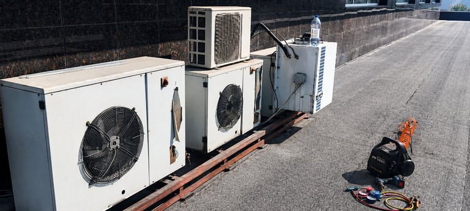
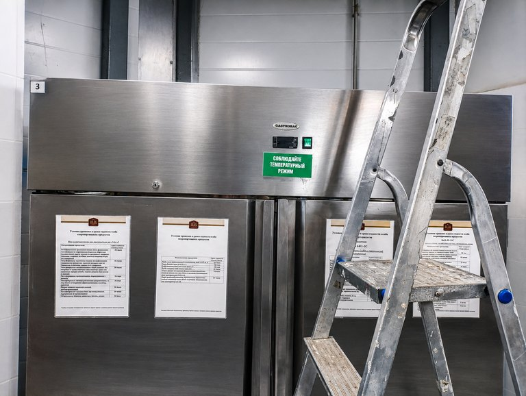
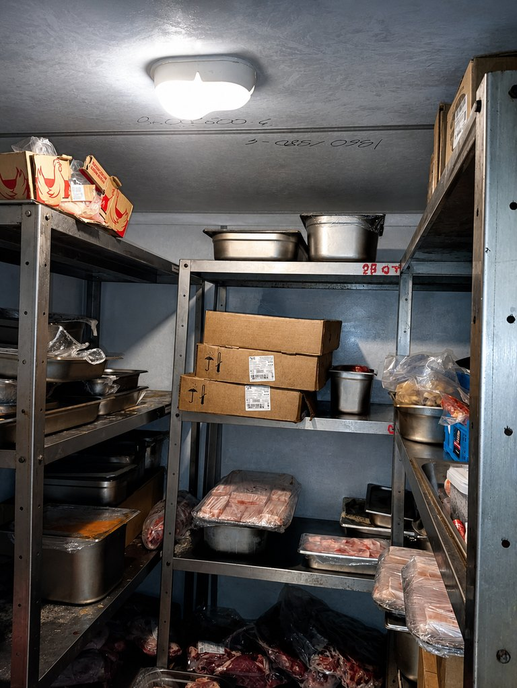
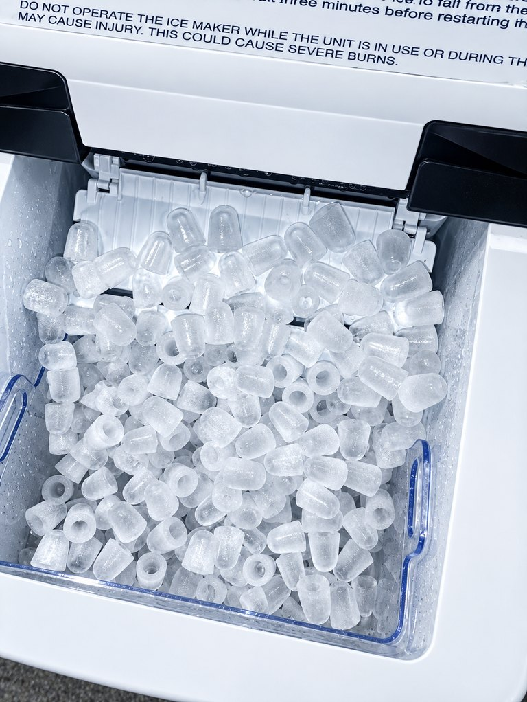

Хранение холода
Шкафы, столы, витрины и морозильное оборудование.
Профессиональный холод для кухни и хранения
Диагностируем оборудование по типу, фактической температуре, этапу цикла и состоянию воздушного и холодильного контуров — без назначения деталей по одному симптому.
Реальные сервисные объекты
Обзорные кадры показывают разные масштабы оборудования: шкафы, камеры, льдогенераторы и вынесенные конденсаторные блоки. По фотографии определяют контекст, а техническое решение принимают после проверки модели и режима работы.




Фотографии обработаны для публикации: скорректированы свет, детализация, цвет и композиция. Видимое состояние оборудования сохранено, но изображение не используют для измерений, определения точной модели, схемы подключения или постановки диагноза без осмотра и документации.
Технический контекст
Холодильный шкаф и камера поддерживают температуру хранения, шокер выполняет управляемое быстрое охлаждение или заморозку, а льдогенератор производит и сбрасывает лёд. Общие элементы холодильного контура не делают эти машины взаимозаменяемыми по диагностике.
До ремонта фиксируют тип оборудования, производителя, модель, серийный номер, контроллер, уставку и фактическую температуру. Для шокеров и льдогенераторов дополнительно важен этап технологического цикла.
Шкафы, столы, витрины и морозильное оборудование.
Панели, двери, испаритель, моноблок или сплит-система.
Циклы по времени и температуре продукта, термощуп и вентиляторы.
Вода, замораживание, сброс, дренаж и контроль бункера.
Порядок проверки
Зафиксировать модель, серийный номер, контроллер и хладагент по шильдику, не угадывая их.
Записать уставку, фактическую температуру и время, за которое возникло отклонение.
Указать, что работает: компрессор, вентиляторы, дисплей, оттайка, насос воды или механизм сброса.
При запахе гари, повторном срабатывании автомата, повреждении кабеля или воде возле электрики обесточить оборудование.
Матрица диагностики
| Контур или узел | Проявление | Что проверяется |
|---|---|---|
| Воздушный тракт | Температура распределяется неравномерно или медленно снижается | Конденсатор, испаритель, вентиляторы и свободный поток воздуха |
| Автоматика | Неверная температура, код или отсутствие команды | Датчики, контроллер, реле, контакторы и дверной сигнал |
| Холодильный контур | Компрессор работает, но холодопроизводительность недостаточна | Компрессор, теплообменники, расширительное устройство и герметичность |
| Оттайка и дренаж | Лёд на испарителе или вода внутри оборудования | Нагреватель, датчик, расписание, слив и обогрев дренажа |
| Технологический цикл | Шокер или льдогенератор не завершает программу | Термощуп, вода, сброс, датчик бункера и программные условия |
Связанные страницы
Заявка на диагностику
Модель, контроллер, уставка, фактическая температура и этап сбоя позволяют подготовить корректный диагностический сценарий.
8 (999) 005-71-72Технические утверждения и процедуры применяются только в пределах указанных типов, серий и контроллеров.
Компрессор, оттайка, вентиляторы и датчики.
FAQ
Профессиональные шкафы, столы, камеры, моноблоки и сплит-системы, шокеры и льдогенераторы. Возможность работ уточняется по модели и шильдику.
Температура показывает результат, но не единственную причину. Нужны состояние вентиляторов, компрессора, оттайки, дверей, датчиков и условия загрузки.
Нет. Потерю хладагента подтверждают измерениями и поиском герметичности; без устранения утечки дозаправка не является ремонтом.
Диагностика оборудования на объекте, демонтаж и маркировка модуля, компонентный ремонт, стендовая проверка и установка обратно.